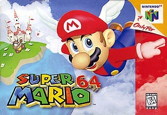
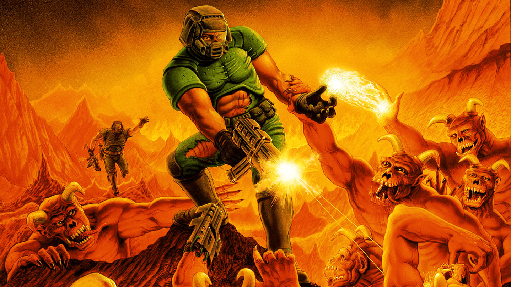
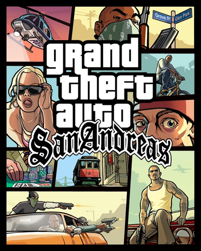
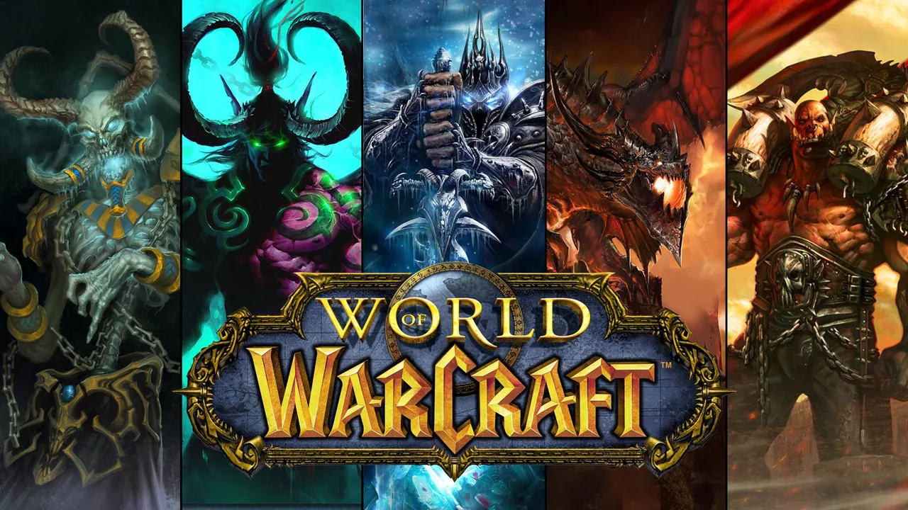
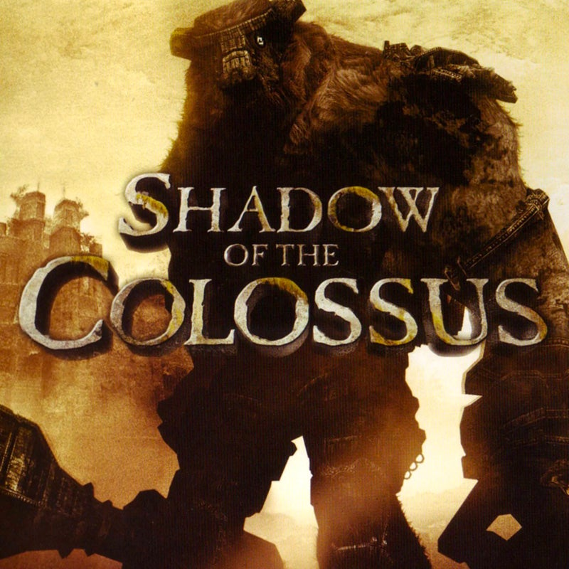

1996
Super Mario 64
Ensinou a indústria a mover personagens e controlar câmeras em um mundo totalmente 3D.
Plataforma • Nintendo 64Alguns jogos ultrapassaram os limites de suas épocas e ajudaram a transformar a indústria dos videogames. Confira seis títulos que deixaram sua marca na história.
A revolução dos jogos em 3D e dos primeiros grandes fenômenos multiplayer.

Ensinou a indústria a mover personagens e controlar câmeras em um mundo totalmente 3D.
Plataforma • Nintendo 64
Popularizou os jogos de tiro em primeira pessoa e foi pioneiro na jogabilidade multiplayer em rede.
FPS • PC
Nasceu como modificação e se tornou uma das bases dos jogos competitivos táticos modernos.
FPS • MultiplayerGrandes mundos abertos, comunidades online e experiências cinematográficas.

Expandiu os limites dos mundos abertos, oferecendo liberdade, rádio marcante e forte impacto cultural.
Mundo aberto • Ação
Redefiniu o significado de comunidade e escala nos jogos online, tornando-se um dos maiores MMORPGs.
MMORPG • Online
Rompeu padrões ao criar um mundo vasto e silencioso, colocando o jogador contra 16 criaturas gigantescas.
Aventura • Ação